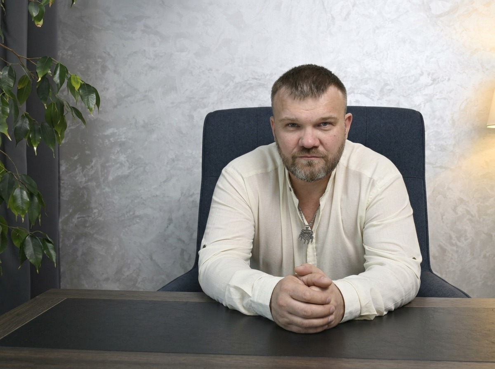
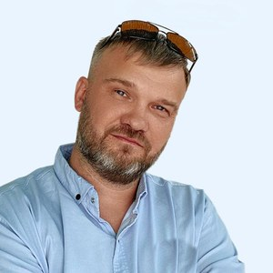

Чтобы утро начиналось со спокойствия, а не со списка дел.
Убираю не симптомы, а программу из детства, из-за которой расслабиться страшно, а любить и доверять невозможно.
Нет Telegram? Забрать «Аптечку» в MAX →
Специалист по работе с подсознанием · международная сертификация · 3 года практики · больше 100 клиентов

Со стороны кажется, что у тебя всё есть. Только это никак не помогает, когда остаёшься с собой наедине.
Это не характер. Это износ.
До 7 лет психика записывает правила выживания. Если опереться было не на кого, записалось: «справляйся в одиночку, иначе пропадёшь». Тогда это спасло. Сейчас это правило решает за тебя: кого ты выбираешь, сколько берёшь на себя и можешь ли хоть на минуту расслабиться.
Умом ты всё давно понимаешь. Но программа записана не в уме, а в подсознании. Пока её не переписать там, где она записана, любой инсайт держится неделю - а потом всё возвращается.
Лучшие мировые техники XXI века работы с подсознанием.
Вот что ты получишь:
Я не учу держать лицо лучше. Я убираю причину, по которой его приходится держать каждую секунду - даже дома.
Не «границы вообще», а конкретные точки, где отказ с детства считался предательством: родители, близкие, те, кого нельзя подвести. Этот паттерн перешёл и во взрослую жизнь.
Внутри перестаёт откликаться на слабость как на знакомое и безопасное. Уходит привычка притягивать и терпеть тех, кому нужна твоя инструкция на каждый шаг.
«Нет у меня никаких обид», сказанное сквозь зубы, обычно значит обратное. Пока эта дверь закрыта, она управляет жизнью больше, чем ты думаешь.
Когда внутренний контроль ослабевает, он ослабевает везде: на работе, дома, в отношениях. Там, где давно не получалось расслабиться, - тоже.
То, что не прожито, передаётся детям - по кругу, из поколения в поколение. У тебя есть шанс остановить это на себе.
Когда уходит старое, освобождается место для силы мысли, ясного намерения и спокойного выбора.
Одиночество и пустота в отношениях - не судьба, а программа. Её можно переписать.
Когда уходит программа «тебя любят за пользу», появляется место для любви просто так: к тебе, а не к тому, что ты делаешь для всех.
Близкие чувствуют, что ты стал(а) другим человеком, и сами начинают относиться к тебе иначе.
Ценность, которая не зависит от денег, статуса и чужого мнения. Это и есть та опора, которой так не хватало.
Четыре шага. Каждый даёт больше предыдущего. Начать можно с бесплатного и идти дальше, только если откликается.
Спокойствие уже сегодня.
«Аптечка» снимает остроту. А тесты покажут, какая программа из детства возвращает её снова и снова.
За 7-10 минут увидишь, какая программа из детства тобой управляет.
Тест показывает, что тобой управляет. На разборе найдём, откуда это пришло именно в твою жизнь.

Один час, и становится ясно, почему так происходит.
Сначала выбери время, оплата после.
Разбор показывает причину. Личная работа её убирает.
Итог: результат, который навсегда, а не откатывается через время.
ГарантияРаботаем до результата. Цена фиксирована и не растёт, сколько бы сессий ни понадобилось. Если результата не будет - я возвращаю деньги.
Цену называю после разбора, честно и сразу. Это дешевле психологов и эзотериков. Беру только тех, кому точно помогу. Я не волшебник.
Ты всё слышишь, всё помнишь и в любой момент можешь выйти. Я - проводник.
Находим момент, где записалась программа: сцену из детства, чужое решение, родовой сценарий.
Отпускаем обиды, прощаем обидчиков действенным методом, а не просто «забудь». Избавляемся от родовых программ.
На место старого приходит то, что нужно именно тебе. Твоё подсознание знает это лучше всех.
«После двух сеансов ушла тревожность, которая мешала мне нормально жить. Я стала спокойнее и увереннее в себе. Метод очень мягкий, ничего страшного в этом нет, а эффект - потрясающий.»
«Спасибо за этот опыт гипноза... убрали страх, а я ведь реально чувствовала физическую тяжесть в груди. Спасибо за решение этой проблемы.»
«Последний сеанс гипнотерапии взорвал мне мозг! Стала больше любить, ценить и уважать родителей. Буду рекомендовать тебя всем, кто хочет проработать детские травмы.»
«Я в приятном шоке. Огромнейшее спасибо, это какой-то судьбоносный момент.»
Я был зависимым и взрывным. Срывался на тех, кого любил, и сам рушил свои отношения. Снаружи держался, внутри была пустота. Сила воли и разговоры давали передышку на неделю. Всё изменила работа с подсознанием: ушла программа, из-за которой я жил на износ. Меня это так перевернуло, что я выучился этому методу и получил международную сертификацию. Сегодня за плечами 3 года практики и больше 100 клиентов.
Прямой, без глянца и красивых метафор. Веду практику онлайн из Вьетнама.
«Я за любовь. Остальное - шелуха.»
Моя история полностью →Оставь любой удобный контакт - не обязательно Telegram. Напишу или позвоню лично и подберём время. Без спама и звонков роботов.
Рано для разговора?
Начни с бесплатной «Аптечки» →